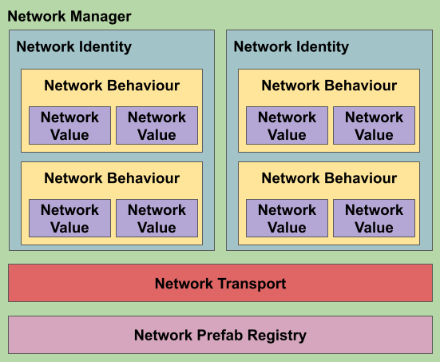
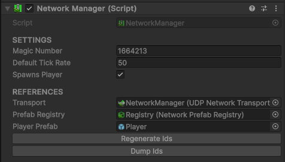
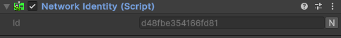
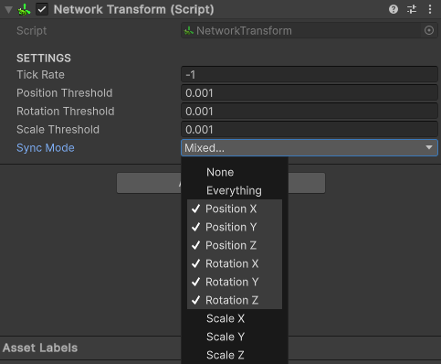
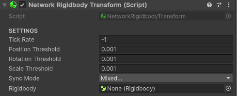
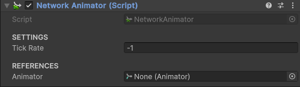
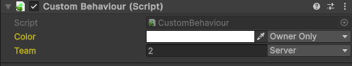

Components
The network component structure can be represented as the following image:

Network Manager
The NetworkManager is the network's main component. It's reponsible to start server, manage connectionsserver, manage objects and sync all the data across the network. Only one NetworkManager shall exist per game. You may create your own implementation of a NetworkManager child class, overriding callbacks to fit your needs.
In the network manager you set the current transportation interface, the prefab registry scriptable and the player prefab. You can also set the default server ticking rate, used by NetworkTransforms and NetworkAnimators.
For the debugging purposes you can use the Dump Ids button to create a file listing all the registered NetworkIdentities at a given time.

Network Identity
The NetworkIdentity is the component used by the network to keep object references across the network. Without the identifier the system can't assure that a object in a client view is the "same" object at the server environment. A NetworkIdentity does not contain any inspector fields, but shows the NetworkId for debugging purposes. The NetworkId is a 16-characters-long hex string (internally it's represented by two ints) that is used to keep the object reference across the network.

You can click at the N button to generate a new id for the object (don't do this if it's not necessary).
Ownership
Every NetworkIdentity is owned by someone. The field NetworkIdentity.OwnerId is a int that stores the ownership of an object. By default this value is set to -1 (Server Owned). Any other value than -1 represents the id of a client. You can use the bool property NetworkIdentity.IsOwnedByClient to check if a NetworkIdentity is owned by any client. You can use the bool property NetworkIdentity.HasAuthority to check if the NetworkIdentity is owned the local client / local server (if it's host/server).
The authority controls who can, by default, modify the NetworkValues related to the NetworkIdentity and who can control the data/state across the network.
When you spawn a NetworkIdentity via network you can choose who is the owner of that object. Additionally you can NetworkIdentity.SetOwner (if you have ownership) to transfer a object to another owner:
1 2 3 4 5 6 | |
Finding Objects
There are many methods to locate NetworkIdentity objects. You can use NetworkIdentity.GetNetworkObject to find a NetworkIdentity using it's NetworkId. You can use NetworkIdentity.GetNetworkObjectsOwnedBy to find all the object owned by a given client.
Spawning Objects
You can spawn new NetworkIdentity objects using the NetworkIdentity.Spawn method using a prefab. But, carefully, you need to register the prefab to the NetworkPrefabRegistry referenced by the NetworkManager:
1 | |
When you spawn a object you can choose it's ownership and if the object is active or not. By default the OwnerId will be -1 (Server) and the object will be active.
Activating / Deactivating Objects
You can also toggle the active state of an object. But, instead of using GameObject.active you must use NetworkIdentity.SetActive method. Only the owner of the object can toggle it's activeness, and it will be synced across the network:
1 | |
Despawning Objects
If you need to destroy a NetworkIdentity object you may not use GameObject.Destroy. Instead you need to use NetworkIdentity.Despawn to destroy the object across the network:
1 | |
Network Behaviour
The NetworkBehaviour class is the base class for all network components that are attached to NetworkIdentity objects. It requires the NetworkIdentity component and CAN'T be added / removed from a object at runtime. Almost all the logic of your project that requires network will be writen implementing this class.
Network Transform
The NetworkTransform is one of the standard basic NetworkBehaviours. It's used to sync a object transform state. You can customize the rate and which fields will be sync across the network (saving data transfer rate):

You shall not change the NetworkTransform.SyncMode runtime. The thresholds determines when a transform should be re-synced or not. If the tick rate is set to -1, the NetworkManager tick rate will be used.
Network Rigidbody Transform
The NetworkRigidbodyTransform works similiar to its base class NetworkTransform, but it also syncs the velocity and angular velocity fields. This component requires the Rigidbody component.

You shall not change the NetworkTransform.SyncMode runtime. The thresholds determines when a transform should be re-synced or not. If the tick rate is set to -1, the NetworkManager tick rate will be used.
Network Animator
The NetworkAnimator, as the name implies, is used to sync the state of an Animator. This component will sync parameters, layer weights and animation/transition timings:

You shall use the NetworkAnimator.SetTrigger instead of the Animator.SetTrigger cause triggers don't save any state, so the system cannot detect changes in them. All other parameter types will sync automatically.
Network Values
The first (and the most simple) way to customize your NetworkBehaviours is using NetworkValues. The list bellow shows all the supported value types. You can add support to your custom type as well, using serialization and deserialization.
- Bool
- Byte
- Int
- Float
- Double
- Long
- Short
- String
- Vector2
- Vector3
- Vector4
- Quaternion
- Color
- NetworkId
1 2 3 4 5 6 7 8 9 10 11 12 13 14 15 16 17 18 19 20 21 22 | |
Network values will be shown yellow in the inspector. For testing purposes, any NetworkValue can be modified in the Inspector, even if you don't have permission do change it.

Listening For Changes
The NetworkValue<> base class has an OnValueChanged callback that is called when the value is updated (locally or externally). It's very useful while creating reactive systems (like a player that changes the color if his team changes). You can see another usage bellow:
1 2 3 4 5 6 7 8 9 10 11 12 13 14 15 16 | |